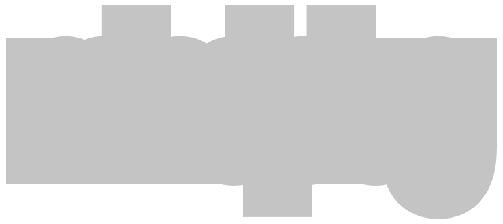
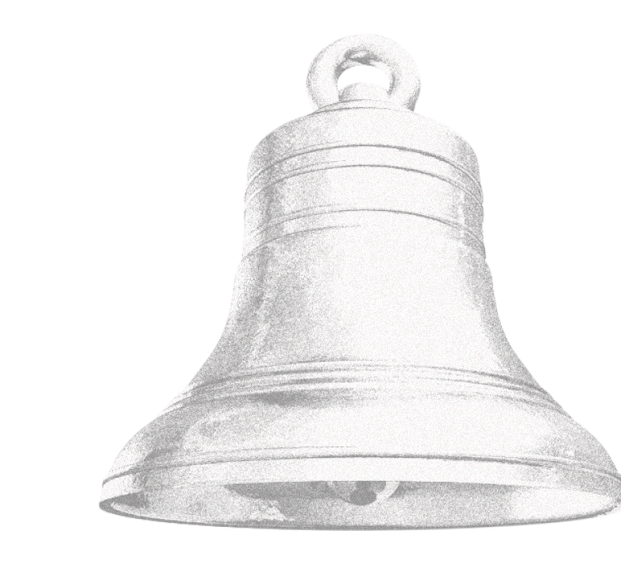

(01)
(02)
(03)
(04)
сообщество, борющееся с силенсофобией
устройство от сообщества mindplug помогает справиться
с тревогой и защищает от тишины с помощью успокаивающих звуков.
кроме того, девайс помогает создать сновидения.

ледяной хруст озера
журчание ручья в лесу
капли воды в пещере
возня в пчелином улье
шелест песка в пустыне
гул городской улицы
шелест страниц книги
падение сосулек
ветер в ущелье
хлопанье паруса
звук шагов по снегу
голос совы
ровный звон бокала
звук капель на крышу
дальний гул вулкана
звон колоколов
журчание воды в аквариуме
гул поезда метро
шум водоворота
щелчки искр в камине
ветер в холмах
звук набегающих волн
завывание ветра в трубе
тихий шепот листвы
ультразвук летучих мышей
ровное пение монахов
негромкий скрип двери
хруст снега под лыжами
***
***
( 70 гц )
( 320 гц )
( 440 гц )
( 3 000 гц )
( 180 гц )
( 450 гц )
( 1 200 гц )
( 250 гц )
( 200 гц )
( 400 гц )
( 130 гц )
( 750 гц )
( 1 000 гц )
( 420 гц )
( 50 гц )
( 3500 гц )
( 280 гц )
( 600 гц )
( 100 гц )
( 950 гц )
( 300 гц )
( 500 гц )
( 700 гц )
( 150 гц )
( 25 000 гц )
( 220 гц )
( 850 гц )
( 180 гц )
(351)
( 35 )
( 10 )
( 42 )
( 21 )
( 94 )
( 7 )
найди свой
в базе данных девайса находится более ста звуков.
эти звуки разделяются
на разные категории
— например, природные, бытовые, технические, —
и были записаны из самых разных уголков планеты.
( 042 )
( 017 )
( 005 )
( 038 )
( 009 )
( 049 )
( 021 )
( 002 )
( 050 )
( 034 )
( 013 )
( 043 )
( 046 )
( 007 )
( 023 )
( 048 )
( 004 )
( 031 )
( 036 )
( 012 )
( 044 )
( 015 )
( 006 )
( 037 )
( 008 )
( 041 )
( 045 )
( 001 )
( 040 )
( 011 )
( 026 )
( 020 )
( 003 )
( 033 )
( 035 )
( 019 )
( 030 )
( 016 )
( 014 )
( 039 )
( 024 )
( 010 )
( 025 )
( 032 )
( 047 )
( 018 )
( 027 )
( 028 )
( 022 )
( 029 )
шепот ветра в горах
легкий дождь в лесу
гул мотора старого самолета
щебетание воробьев
треск костра
скрип деревянного пола
ровное жужжание кондиционера
успокаивающий шум прибоя
голос кукушки
порыв ветра через тростник
ледяной хруст озера
плавное журчание ручья
капли воды в пещере
пчелиный улей
шелест песка под ветром
гул городской улицы ночью
шелест страниц книги
падение сосулек
завывание ветра в ущелье
мягкое хлопанье паруса
звук шагов по снегу
хруст гравия под ногами
перекликание дельфинов
шум водопада
тиканье старинных часов
трель цикад
скрип стула
громыхание молнии вдалеке
голос совы
ровный звон бокала
звук капель на крышу
дальний гул вулкана
звон колоколов
журчание воды в аквариуме
хлопанье крыльев голубей
скрежет ножа по камню
гул поезда метро
шум водоворота
щелчки искр в камине
ветер в холмах
звук набегающих волн
завывание ветра в трубе
тихий шепот листвы
ультразвук летучих мышей
ровное пение монахов
негромкий скрип двери
хруст снега под лыжами
пение китов
природный
природный
технический
природный
природный
бытовой
технический
природный
природный
природный
природный
природный
природный
природный
природный
урбанистически
бытовой
природный
природный
природный
природный
природный
природный
технический
природный
бытовой
природный
природный
бытовой
природный
технический
бытовой
природный
бытовой
урбанистический
природный
природный
природный
природный
природный
природный
природный
человеческий
бытовой
природный
природный
альпы, швейцария
амазонка, бразилия
англия, лондон
токио, япония
арктика, канада
нью-йорк, сша
дубай, оаэ
бали, индонезия
сибирь, россия
камарг, франция
байкал, россия
норвегия, осло
пещеры, чехия
прованс, франция
сахара, марокко
берлин, германия
лондон, англия
финляндия
гранд-каньон, сша
греция
исландия
италия
мальдивы
виктория-фоллс, замбия
москва, россия
таиланд
киев, украина
колорадо, сша
трансильвания, румыния
италия
ирландия
гавайи
рим, италия
сингапур
париж, франция
афины, греция
торонто, канада
норвегия
германия
шотландия
мексика
китай
польша
карибы
тибет
турция
альпы, австрия
арктика
канада
( 300 гц )
( 450 гц )
( 700 гц )
( 5000 гц )
( 650 гц )
( 850 гц )
( 250 гц )
( 350 гц )
( 3700 гц )
( 150 гц )
( 70 гц )
( 320 гц )
( 440 гц )
( 3000 гц )
( 180 гц )
( 450 гц )
( 1200 гц )
( 250 гц )
( 200 гц )
( 400 гц )
( 130 гц )
( 210 гц )
( 8000 гц )
( 320 гц )
( 500 гц )
( 6000 гц )
( 750 гц )
( 150 гц )
( 750 гц )
( 1000 гц )
( 420 гц )
( 50 гц )
( 3500 гц )
( 280 гц )
( 4000 гц )
( 2500 гц )
( 600 гц )
( 100 гц )
( 950 гц )
( 300 гц )
( 500 гц )
( 700 гц )
( 150 гц )
( 25000 гц )
( 220 гц )
( 850 гц )
( 180 гц )
( 40 гц )
( ева кейзер )